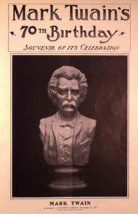

|  |
Sounding "Mark Twain" at 70The dinner party thrown on December 5th, 1905, by George Harvey, editor of Harper's Weekly, to celebrate MT's seventieth birthday was an elaborate and lengthy affair: over 170 friends and fellow writers attended, a 40-piece orchestra provided musical accompaniment, and 15 speeches and formal toasts were given. A fuller account of the event, including the text of the speech MT himself gave, is available in the MARK TWAIN ON STAGE section of the site. Reproduced here are the other fourteen speeches, as well as the letters and cablegrams sent in by the celebrities who were unable to attend, as these remarks were published in a special supplement to Harper's Weekly (23 December 1905). Taken together, they can tell us a lot about how the meaning of "Mark Twain" was defined by American high culture at the beginning of the twentieth century. |